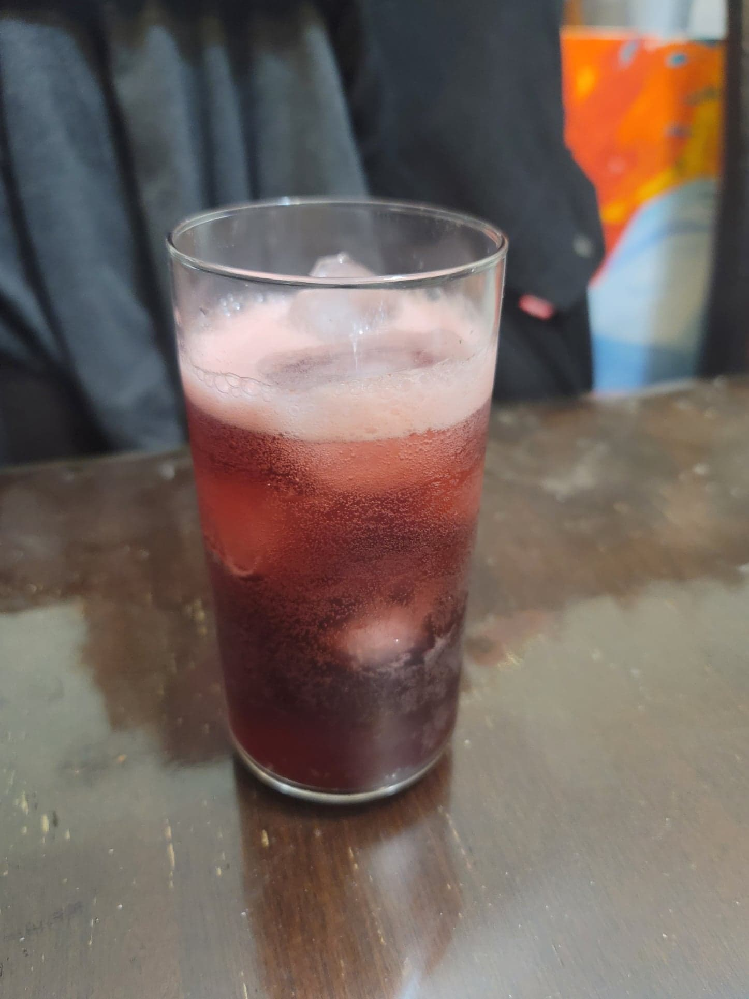

Cherry Almond Kombucha

Ingredients:
- 4 cups Kombucha, after 1st fermentation
- 2/3 cup Dark cherries, pitted
- 1 tsp Almond extract
Instructions:
- Purée the cherries with the almond extract and a splash of kombucha. Divide the mixture evenly into 2 16 oz flip-top bottles.
- Fill the remaining space in the bottles with kombucha. Let ferment for 3-7 days or until carbonated to preference. Then refrigerate and serve cold over ice.